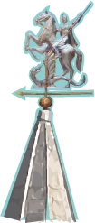
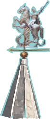

В городе Невьянск возвышается очень необычная башня — наклонная. Так ее называют потому, что она отклоняется от вертикали на целых 1,8 метра! В таком удивительном положении башня стоит уже почти три столетия (ее построили в начале 18 века), но до сих пор никто не может разгадать ее загадку.
Одни говорят, что башня была специально построена с наклоном. Другие во всем обвиняют архитектора. По их мнению, башня накренилась еще при возведении основания, поэтому ее пришлось достраивать уже с учетом появившегося наклона.
Есть еще красивая городская легенда, согласно которой башня как бы кланяется в знак уважения перед своим создателем — промышленником Акинфием Никитичем Демидовым — и всем его знаменитом родом.
Чем же так известны Демидовы, что даже башня склоняется перед их величием?
Основатель рода Демидовых, Никита Антуфьев, благодаря своей энергии и смекалке сумел завоевать расположение российского правителя Петра I. Предприниматель получил дворянский титул под фамилией Демидов и огромные земли на Урале для строительства металлургических заводов. А в 1702 году в его распоряжение перешло главное предприятие Невьянска — чугуноплавильный и железоделательный завод.
После смерти Никиты Демидова управление заводом досталось его сыну — Акинфию Никитичу. Прочно обосновавшись в Невьянске, он много сделал для развития города,
в том числе заказал строительство Невьянской башни.
К сожалению, история не сохранила имя зодчего наклонной башни. По одной из легенд, Акинфий Демидов приказал сбросить архитектора с верхнего яруса башни, чтобы он больше никому не смог построить такое же чудо. Нам остается только предполагать, что зодчий был нашим соотечественником, так как все элементы строения типичны для старорусской архитектуры. Внизу — квадратное основание (его принято называть «четверик»), а сверху надстроены еще три восьмигранных (с восемью сторонами) яруса.
Внутренние помещения расположены на девяти уровнях-этажах.
Во все можно заглянуть, но задержаться подольше хочется на нескольких. Прежде всего, стоит побродить по секретной лаборатории Акинфия Демидова, где якобы чеканили фальшивые деньги. Доказательством тому служат найденные в саже дымохода частицы золота и серебра. Но сами фальшивые деньги никто никогда не видел, не найдено было и никакого оборудования, поэтому обвинение оказалось необоснованным.
Выше находится слуховая комната. Особенность ее состоит в том, что если встать лицом в один из углов, можно услышать даже самых тихий шепот людей в противоположном углу. Говорят, в эту комнату Акинфий Демидов приводил своих недругов, «тактично» давал им возможность поделиться впечатлениями без свидетелей, а на самом деле присутствовал при их разговоре. Удивляясь его «догадливости», люди говорили: «Демид все слышит, все знает».
Седьмой и восьмой этажи занимают куранты, созданные в 1730 году английскими мастерами. Акинфий Демидов приобрел их за пять тысяч рублей. По тем временам сумма эта была баснословно высокой, часы стоили дороже самой башни, которую во второй половине XVIII века оценили в 4207 рублей золотом. Эти часы поражают не только точностью хода и красотой колокольного звона, но и репертуаром музыкальном вала, на котором изначально было записано 18 мелодий. В 1985 году к ним добавили музыку М. Глинки из оперы «Иван Сусанин» и «Марш Мендельсона».
На самом верхнем этаже башни — балкон, в былые времена служивший наблюдательным пунктом. Здесь, на высоте птичьего полета, грандиозность башни ощущается в полной мере. Невольно хочется сравнить ее с самим Демидовым, который никогда не пасовал перед трудностями.
поражают не только точностью хода и красотой колокольного звона, но и репертуаром музыкальном вала, на котором изначально было записано 18 мелодий. В 1985 году к ним добавили музыку М. Глинки из оперы «Иван Сусанин» и «Марш Мендельсона».
На самом верхнем этаже башни — балкон, в былые времена служивший наблюдательным пунктом. Здесь, на высоте птичьего полета, грандиозность башни ощущается в полной мере. Невольно хочется сравнить ее с самим Демидовым, который никогда не пасовал перед трудностями.


 
